Image Segmentation is the process of partitioning a digital image into multiple segments (sets of pixels - super-pixels).
The goal is to simplify and/or change the representation of an image into something that is more meaningful and easier to analyze.
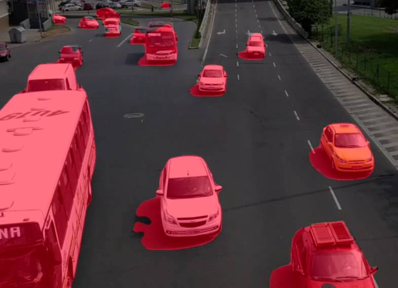
## Fundamentals
### Identifying Regions
1. Regions of an image segmentation should be uniform and homogeneous with respect to some characteristic, such as gray level, color, or texture.
2. Region interiors should be simple and without many small holes.
3. Adjacent regions of a segmentation should have signigicantly different values with respect to the characteristic on which they are uniform.
4. Boundaries of each segment shoould be smooth, not ragged, and should be spatially accurate.
Identifying Regions
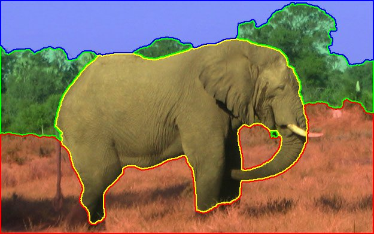
### Formal Definition
**Segmentation** - is a process, that divides $R$ into $n$ subregions $R_1, R_2,...,R_n$ such that:
1. $\cup^n_{i=1}R_i = R $
2. $R_i$ is a connected for each $i = 1, 2,..., n$ -(4-directions or 8-directions)
3. $ R_i \cap R_j = \varnothing$ for all $i$ and $j$, $i \ne j$
4. $ Q(R_i) = TRUE $ for each $i = 1, 2,..., n$
5. $ Q(R_i \cup R_j) = FALSE $ for any adjacent regions $R_i$ и $R_j$ - (two adjacent regions shall be different in terms of $Q$)
Here $ Q(R_k) $ is a predicate that indicates some property over the region.
**Adjacent regions** are regions which produces connected set after their union.
## Encoding Regions
Each algorithm that produces regions has to have a way to store them for future use and processing.
1. Overlays
2. Labeled Images
3. Boundary Coding
4. Quad Trees
5. Property Tables
Overlays
Show regions computed from the image by overlaying some color or colors on top of the original image.
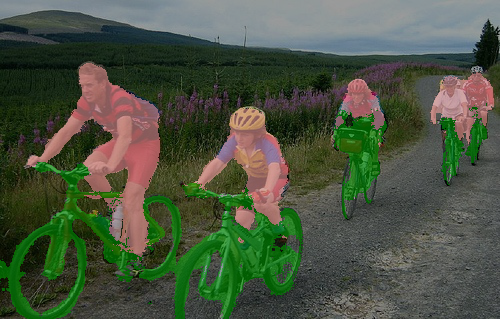
Labeled Images
Intermediate representation for regions that can also be used in further processing. First assign unique identifier for each region. Then create new image where all the pixels of a region will have its unique identifier as their pixel value.
Pixel's connectivity/directions may depend on the region. Background may use 8-, but object may use 4-.
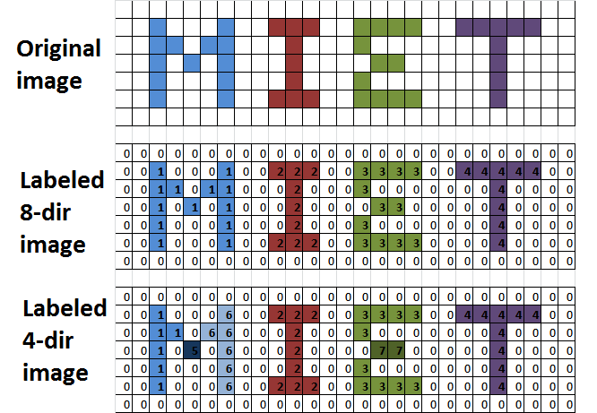
Boundary Coding
The idea is to represents boundaries in special data streucture instead of an image. It allows to optimize memory usage.
The simplest method is to save border pixels of each region, but more advanced approach is to use Freeman chain code (1961). It encodes the information from the list of points at any desired quantization and uses less space than the original point list.
Quad Trees
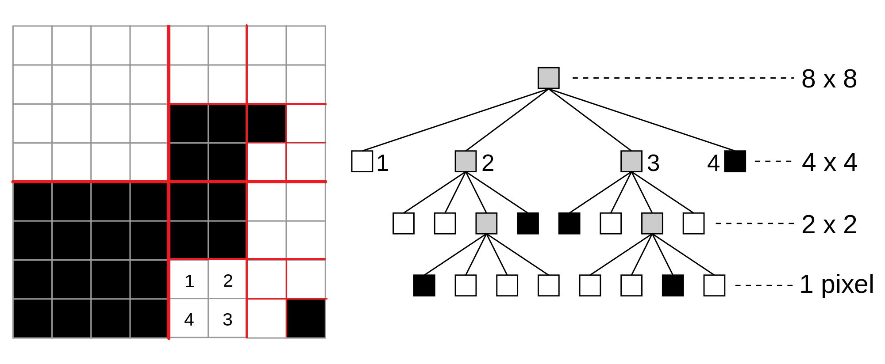
### Property Tables
The idea is to represent region by its extracted properties. It is a table in relational database sense that has a row for each region in the image and a column for each property of interest.
Properties can represent the size, shape, intensity, color, or texture of the region.
Example: In CBIR system, regions might be discribed by area, ratio of minor-to-major axis of the best-fitting ellipse, two main colors, and one or more texture measures.
Thresholding
It is the simplest and fastest method of image segmentation.
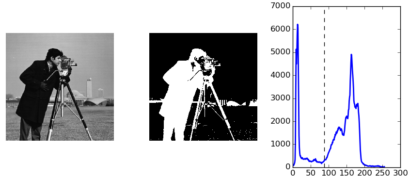
### Definition
$f(x,y)$ - image function,
$p(x,y)$ - local property of the pixel (x,y),
$T_i=T(x,y,p(x,y),f, i)$ - threshold function, where $0 \le i < N $ - index of the threshold,
$ g(x,y) = \cases{i+1, f(x,y) > T_{i}, \\\ 0, f(x,y) \le T_0;}$
$g(x,y)$ - labeled image (binary if $N = 1$).
Problems
Noise - may be reduced by preliminary filtering
Gradients - may be handled in dynamic or adaptive thresholding
Mixture of signals - may be handled in dynamic or adaptive thresholding
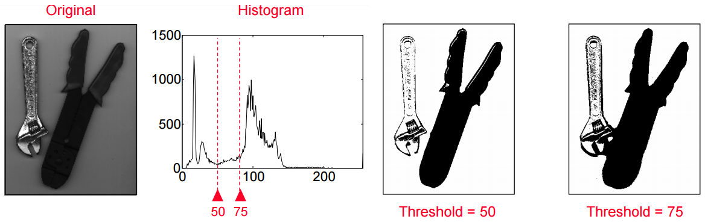
### Automated Thresholding
To make segmentation more robust, the threshold should be automatically selected by the system.
Knowledge about the objects, the application, the environment should be used to choose the threshold automatically:
* Intensity characteristics of the objects.
* Sizes of the objects.
* Fractions of an image occupied by the objects.
* Number of different types of objects appearing in an image.
### Automated Thresholding Methods
* P-tile thresholding
* Optimal thresholding
* Iterative Optimal thresholding
* Otsu segmentation (binarization)
* Mixture modelling
### P-tile Thresholding
Input information:
* Object is darker or lighter.
* Object occupies 1/p from the total image area.
*Algorithm*: Set threshold for the intensity level such that 1/p image pixels are below it.
$h_i=\frac{n_i}{N}$ - probability of the pixel occurence with intensity = $i$.
* Dark object: $\frac{1}{p}=\sum_{i=0}^{T}{h_i}$.
* Light object: $\frac{1}{p}=\sum_{i=T}^{Max}{h_i}$.
### Optimal Thresholding
**Idea**: the histogram of an image is the sum of two overlapping distributions.
**Optimal threshold**: overlapping point of these distributions corresponds to the minimum probability between the maxima of 2 distributions.
**Problem**: distributions are unknown.
Optimal Thresholding (cont)
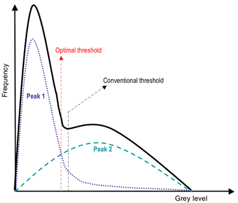
### Iterative Optimal Thresholding
Algorithm:
1. Choose an initial value of the T.
2. Segment the image with T which produce two groups: $G_1$ contains pixels with intensity $\le T$ and $G_2$ contains pixels with intensity $> T$.
3. Calculating avarage intensivity $\mu_1, \mu_2$ for $G_1, G_2$ respectively.
4. Calculating new threshold: $T = \frac{\mu_1 + \mu_2}{2}$.
5. Repeat 2-5 untill differense of the T for the last and previus iteration is less then some $\delta$.
Iterative Optimal Thresholding (demo)
TODO: Insert DEMO of the iterative optimal thresholding
It shall be GIF image with 5-10 frames showing changes of the threshold.
###[Otsu Method](http://ieeexplore.ieee.org/stamp/stamp.jsp?arnumber=4310076)(1979)
**The criterion for Otsu** is the minimization of the within-group variance $\sigma^2_W$ of the two groups of pixels separated by the threshold.
The between class variance $\sigma^2_B$ is far quicker to calculate and the threshold with the maximum between class variance also has the minimum within class variance.
$\sigma^2_W = W_b\cdot\sigma^2_b + W_f \cdot \sigma^2_f$,
$\mu = W_b\cdot\mu_b + W_f \cdot \mu_f$,
$\sigma^2_B = \sigma^2 - \sigma^2_W = W_b(\mu_b - \mu)^2 + W_f \mu_f - \mu)^2 = W_bW_f(\mu_b - \mu_f)^2$,
$b$ - background, $f$ - foreground.
###Otsu Method (cont)
####Weaknesses
* The method assumes that the histogram of the image is bimodal (i.e., two classes).
* The method breaks down when the two classes are very unequal (i.e., the classes have very different sizes):
* In this case, $\sigma^2_B$ may have two maxima.
* The correct maximum is not necessary the global one.
* The selected threshold should correspond to a valley of the histogram.
* The method does not work well with variable illumination.
Otsu Method (example)
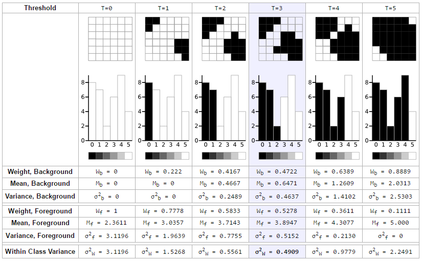
Otsu Method (demo)
TODO: Insert DEMO of the Fast Otsu Method based on $\sigma^2_B$
It shall be GIF image with 5-10 frames showing changes of the threshold.
### Gaussian Mixture Modelling (GMM)
**Idea**: The image intensivity histogram may be interpet as a sum of probability densities of regions:
$p(z) = P_1p_1(Z) + P_2p_2(z)$.
$P_1, P_2$ - a priory probability of the each region. Any pixel of the image belongs to background or object region.
$P_1 + P_2 = 1$.
Required to choose T which minimizes the 1st type errors:
$E(T) = P_1E_1(T) + P_2E_2(T)$.
$P_1p_1(T)=P_2p_2(T)$, where $p_i=\frac{1}{\sqrt{2\pi}\sigma_i}e^{-\frac{(z-\mu_i)^2}{2\sigma_i^2}}$
### Gaussian Mixture Modelling (demo)
TODO: Insert DEMO of the GMM
It shall be original image, segmented image, histogram of the original image and estimated probability densities.
Iterationally examines neighboring pixels of initial seed points and determines whether the pixel neighbors should be added to the region.
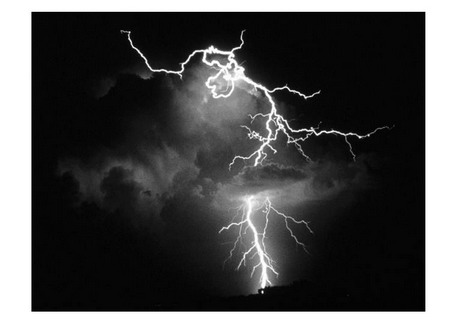
## Definition
1. $ R = \bigcup_{i=1}^{n} {R_i} $.
2. $ R_i\text{ is a connected region},\text{ i}=\text{1},\text{ 2},\text{ }...,\text{n} $.
3. $ R_i \bigcap R_j = \varnothing \text{ for all } i=1,2,...,n $.
4. $ P(R_i)=TRUE\text{ for }i=1,2,...,n $.
5. $ P(R_i \bigcup R_j)=FALSE\text{ for any adjacent region }R_i \text{ and }R_j $.
$ P(R_i) $ - is a logical predicate defined over the points in set $ R_i $ and $ \varnothing $ is the null set.
$P(R) = TRUE \text{ if } |f(x,y) − \mu_R| ≤ \delta $
### Advantages
+ Region growing methods can correctly separate the regions that have the same properties we define.
+ Region growing methods can provide the original images which have clear edges with good segmentation results.
+ The concept is simple. We only need a small number of seed points to represent the property we want, then grow the region.
+ We can determine the seed points and the criteria we want to make.
+ We can choose the multiple criteria at the same time.
### Disadvantages
- Computationally expensive
- It is a local method with no global view of the problem.
- Sensitive to noise.
- Unless the image has had a threshold function applied to it, a continuous path of points related to colour may exist which connects any two points in the image.
Region Growing (demo)
TODO: Insert DEMO of the Region Growing for single seed with 4 and 8-connected pixels
It shall be GIF image with N frames showing region growing in time.
Region Growing (demo)
TODO: Insert DEMO of the Region Growing for 2-3 seed with 4 and 8-connected pixels
It shall be GIF image with N frames showing region growing in time.
Splitting and Merging
The top-down split-and-merge algorithm considers initially the entire image to be a single region.
Then iteratively splits each region into subregions or merges adjacent regions until all regions become uniform or until the desired number of regions have been established
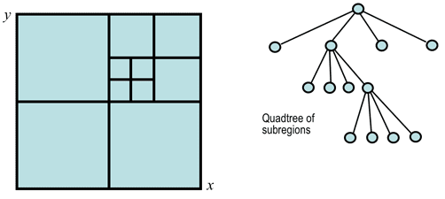
###Algorithm
* A common splitting strategy for a square image is to divide it recursively into smaller and smaller quadrants until, for any region $R$, the uniformity predicate $P(R) = TRUE$.
* The strategy builds a top-down quadtree: if $P(image) = FALSE$, the image is divided into four quadrants; if $P(quadrant) = FALSE$, the quadrant is divided into subquadrants; and so on.
* The splitting stage alternates with a merging stage, in which two adjacent regions $R_i$ and $R_j$ are combined into a new, larger region if the uniformity predicate for the union of these two regions, $P(R_i \bigcup R_j) = TRUE$.
### Demo
TODO: Insert DEMO of the Region Growing for single seed with 4 and 8-connected pixels
It shall be GIF image with N frames showing splitting and then merging regions in time.

Watershed
A drop of water following the gradient of an image flows along a path to finally reach a local minimum. Intuitively, the watershed of a relief correspond to the limits of the adjacent catchment basins of the drops of water.
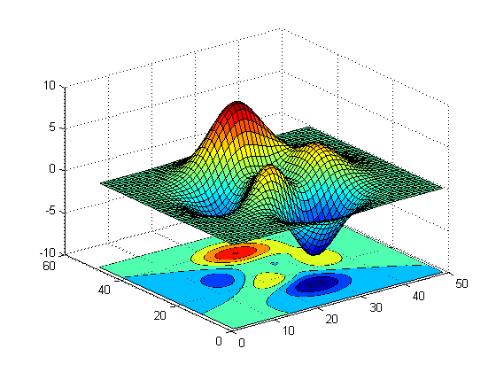
Algorithm
Main goal is to find watershed lines.
Imagine that each locacl minimum have a hole.
Iteratively: whole surf filled with water which unifirmly flows via hole.
Create dam if next fill produces merge of adjucent pools.
Stop when only only dam is under the water or water level = MAX.
### Formal Description
* $ M_1, M_2, ..., M_R $ - coordinates of local minimums of the $f(x,y)$.
* $ C(M_i) $ - points of the pool with local minimum in $M_i$.
* $ T[n] = (s,t)|g(s,t) < n $ - points with intensity < n.
* $ C_n(M_i)=C(M_i) \bigcap T[n] $ - points of the pool with $M_i$ under n-th water level.
* $ C[n] = \bigcup_{i=1}^{R}{C_n(M_i)} $ - union of all pool's parts under the n-th water level.

###Dam construction
Find dam using double dilatation.

- A - Shows $ C_{n-1} (M_1) $ and $ C_n-1 (M_2) $ at step $n-1$.
- B - Shows $ C_n(M_1|M_2) $ at step $n$.
- C - Results of double dilatation at step $n-1$.
### Markers

### Demo
Watershed with markers

### OpenCV Demo
### Advantages :
+ Gives connected components.
+ A priori information can be implemented in the method using markers.
###Disadvantages :
+ Often needs preprocessing to work well.
+ Fragmentation or “over-segmentation” can be a problem.
## Clusterization
Idea is to extract similar pixels into separate cluster.

### K-means (sample)
Clustering using intensity only or color only.

### K-means (sample)
Clusters together tokens with high similarity (small distance in feature space).

### K-means (sample)
Clustering using color and spatial coherence.

### K-means
#### Advantages :
+ Very simple method (NP-hard).
+ Converges to a local minimum of the error function.
#### Disadvantages :
+ Memory-intensive.
+ Need to pick K.
+ Sensitive to initialization.
+ Sensitive to outliers.
+ Only finds “spherical”
clusters.
Texture segmentation
The goal is to identify regions based on their texture.
Grey level or colour pixel values by themselves are not sufficient for segmenting natural highly-textured images like those shown below:
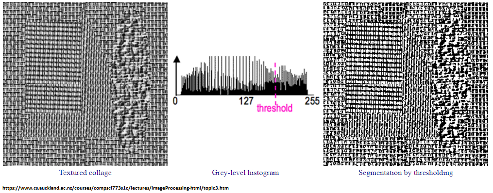
Local Features Segmentation
To find meaningful regions containing different types of homogeneous textures, specific texture measures (features) have to be used like, for example, local spatial signal statistics:
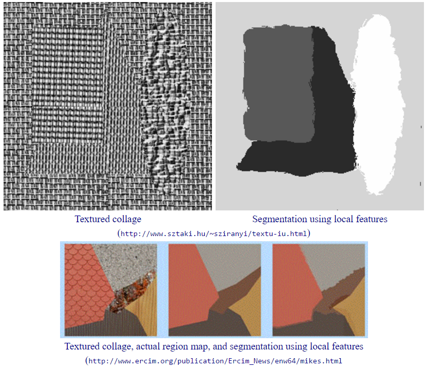
Measurement
Texture is a spatial property that characterises groups of pixels. Simplest statistical measure is the variance of grey levels in a square n×n neighbourhood centred on a pixel:
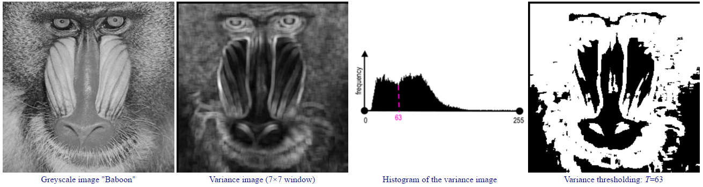
Bank Of Gabor Filters
The images are filtered using the real parts of various different Gabor filter kernels. The mean and variance of the filtered images are then used as features for classification, which is based on the least squared error for simplicity.
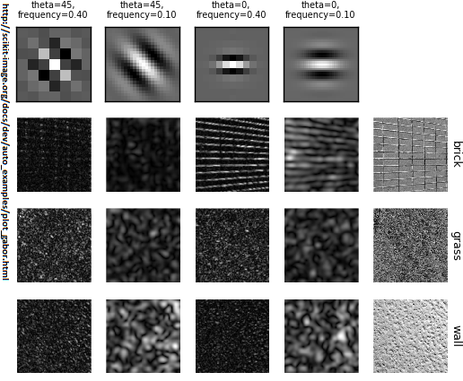
## Interactive Segmentation
The user can mark desired regions.

### Interactive Segmentation (cont)
+ [Graph Cut](https://en.wikipedia.org/wiki/Graph_cuts_in_computer_vision)

## Benchmarks
### Dataset and Benchmark
* [The Berkeley Segmentation Dataset and Benchmark](https://www.eecs.berkeley.edu/Research/Projects/CS/vision/bsds/)
* [Contour Detection and Image Segmentation Resources](http://www.eecs.berkeley.edu/Research/Projects/CS/vision/grouping/resources.html)
* [A benchmark for semantic image segmentation](http://www3.ntu.edu.sg/home/asjfcai/Benchmark_Website/benchmark_index.html)
### Resources
* [Rafael С. Gonzalez, Richard E. Woods (2008): "Digital Image Processing (3rd Edition)"](http://www.imageprocessingplace.com/DIP-3E/dip3e_main_page.htm)
* [Linda G. Shapiro and George C. Stockman (2001): “Computer Vision”](ftp://91.193.237.1/pub/docs/linux-support/computer%20science/computer%20vision/Computer%20Vision%20-%20Linda%20Shapiro.pdf)
* [Wikipedia: Image Segmentation](https://en.wikipedia.org/wiki/Image_segmentation)
* [Otsu Threshold Segmentation](http://www.labbookpages.co.uk/software/imgProc/otsuThreshold.html)
* [OpenCV Thresholding](http://docs.opencv.org/3.1.0/d7/d4d/tutorial_py_thresholding.html)
* [Image Segmentation Lecture] (https://www.cs.auckland.ac.nz/courses/compsci773s1c/lectures/ImageProcessing-html/topic3.htm#simple)
* [Watershed Segmentation](http://bigwww.epfl.ch/demo/jwatershed/start.php)
* [Region and Edge based segmentation (2011)](http://www.uio.no/studier/emner/matnat/ifi/INF4300/h11/undervisningsmateriale/INF4300-2011-f04-segmentation.pdf)
## Thank You!